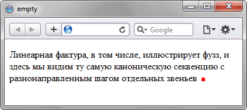

Псевдокласс :empty
Псевдокласс :empty представляет пустые элементы, иными словами такие, которые не содержат дочерних элементов, текста или пробелов. К примеру, <p></p> является пустым элементом, а <p> </p>, <p> </p> или <p>эге</p> уже нет.
Синтаксис
Селектор:empty { ... }Пример
<!DOCTYPE html>
<head>
<meta charset="utf-8">
<title>empty</title>
<style>
span:empty {
background: red;
padding: 3px;
margin-left: 7px;
display: inline-block;
}
</style>
</head>
<body>
<p>Линеарная фактура, в том числе, иллюстрирует фузз, и здесь мы видим
ту самую каноническую секвенцию с разнонаправленным шагом
отдельных звеньев<span></span></p>
</body>
</html>Результат данного примера в браузере Safari показан на рис. 1.

Рис. 1. Применение псевдокласса :empty
Спецификация
| Спецификация | Статус |
|---|---|
| Selectors Level 4 | Рабочий проект |
| Selectors Level 3 | Рекомендация |
Браузеры
| Internet Explorer | Chrome | Opera | Safari | Firefox |
| 9 | 1 | 9.5 | 3.1 | 1 |
| Android | Firefox Mobile | Opera Mobile | Safari Mobile |
| 2.1 | 1 | 10 | 3.1 |